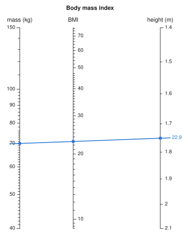
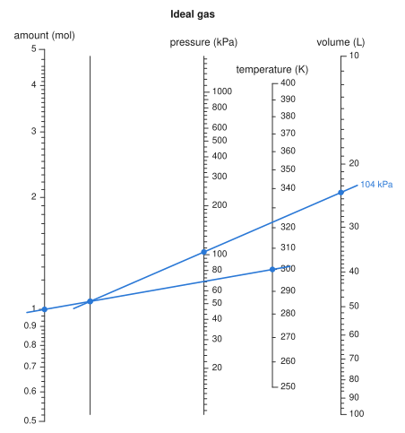

From a formula#
Every other constructor asks you to rewrite a formula into a separable form and choose its transforms first. auto_nomogram does that part, from the function as you would ordinarily write it:
using Nomograms
bmi = auto_nomogram(
(m, h) -> m / h^2,
Variable(:mass; domain = (40, 150), label = "mass (kg)"),
Variable(:height; domain = (1.4, 2.1), label = "height (m)"),
Variable(:BMI; label = "BMI");
title = "Body mass index",
)
drawing(bmi; isopleths = [isopleth(bmi; mass = 70, height = 1.75, label = "22.9")])
Each input is a Variable with a domain, or simply name => (lo, hi), in the order the function takes them. The last argument names the result, whose range is worked out from the function. Labels, tick formats and explicit ticks on the variables are kept; transforms are derived — that is the point.
The function can come from anywhere, including other packages. This one is passed in exactly as Base defines it:
angle = auto_nomogram(atan, :y => (1, 10), :x => (1, 10), :angle)
evaluate(angle; y = 1, x = 1).angle ≈ π / 4trueWhen a formula has a chart at all#
A formula z = F(x, y) can be drawn on three straight parallel scales exactly when there are transforms with \(h(z) = f(x) + g(y)\). Differentiating that with respect to each argument gives
so \(\ln|F_x / F_y|\) must split into a function of \(x\) plus a function of \(y\). The converse holds too: if it splits, take \(f'\) and \(g'\) from the two parts; then \(\nabla(f + g)\) is everywhere parallel to \(\nabla F\), so \(f + g\) is constant exactly where \(F\) is, which makes it a function of \(F\) — and that function is \(h\). The test goes back to Saint-Robert in 1871 (see the Bibliography); the argument above is self-contained, and is all the package relies on.
separability_defect applies it numerically. Rather than take a mixed second derivative of a logarithm, which is noisy, it checks the equivalent identity
which needs only first derivatives. Zero means the formula has a chart:
separability_defect((x, y) -> x + y + x * y, (0, 5), (0, 5)), # (1+x)(1+y) - 1
separability_defect((x, y) -> x^2 + x * y + y, (0.5, 5), (0.5, 5))(1.9947654639196344e-10, 0.4940947607156235)The first is separable despite its cross term — it is (1 + x)(1 + y) − 1 in disguise. The second is not, and auto_nomogram says so rather than drawing it:
try
auto_nomogram((x, y) -> x^2 + x * y + y, :x => (0.5, 5), :y => (0.5, 5))
catch err
println(sprint(showerror, err))
endArgumentError: z = F(x, y) is not separable: there are no transforms with h(z) = f(x) + g(y), so it has no chart on three straight scales (ln|F_x/F_y| fails to split by 0.494). It may still have one with a curved scale or a net, which need a form you derive: see `determinant_nomogram` and `net_nomogram`.Recovering the transforms#
When the test passes, the same identity hands the transforms back. Fixing \(y\) at a reference value \(y_0\) gives \(f'(x)\) up to a constant, fixing \(x\) at \(x_0\) gives \(g'(y)\), and numerical integration turns each into a TabulatedScale. \(h\) is tabulated by walking from the corner of the domain that minimises \(F\) to the one that maximises it, along which \(f\) and \(g\) change the same way, so \(F\) never has to be inverted.
The transforms are only fixed up to a common sign, and the result axis is chosen to read upwards. An input the result decreases in then runs downwards, as it must for the lines to agree — the cost axis of a profit chart, say.
Each axis then gets linear or logarithmic ticks according to how its transform spreads its values. If the geometric mean of the domain lands nearer the middle of the axis than the arithmetic mean, the axis is logarithmic in character — even inside a single decade, as with log(b, x)'s base axis over [2, 10]. Shape alone does not settle it, though: over 100 to 200 the only whole logarithmic values are the two ends. So for a log-shaped axis both styles are thinned onto it and whichever lands more labels wins.
More than two inputs#
One alignment line relates only three scales, so a formula with three or more inputs becomes a chain of charts linked by bare turning lines. The reader lays a line across the first stage, notes where it crosses the turning line, then pivots there and reads the next. auto_nomogram finds the chain itself. Lay a line from amount to temperature and mark where it crosses the bare turning line, then pivot there to volume and read the pressure:
gas = auto_nomogram(
(n, T, V) -> n * 8.314 * T / V, # kPa, with V in litres
Variable(:n; domain = (0.5, 5), label = "amount (mol)"),
Variable(:T; domain = (250, 400), label = "temperature (K)"),
Variable(:V; domain = (10, 100), label = "volume (L)"),
Variable(:P; label = "pressure (kPa)");
title = "Ideal gas",
)
drawing(gas; isopleths = isopleth(gas; n = 1, T = 300, V = 24, label = "104 kPa"))
A formula \(F(x, y, w)\) splits this way when it depends on some pair of inputs only through one combination of them, \(F = G(T(x, y), w)\). That holds exactly when \(F_x / F_y\) does not depend on \(w\) — then \(F\)'s level curves in the \((x, y)\) plane are the same family whatever \(w\) is. The first stage charts the combination \(T\), the second charts \(z\) from \(T\) and \(w\), and more inputs are reduced the same way, a pair at a time.
Which pair goes first changes the picture, not the answers. A stage puts its result between its inputs, closest to the one spanning more, so a last stage that pairs a scale running over decades with one covering a sliver squeezes the result against the former. So every workable pairing is built and the one with its axes furthest apart is kept, which for a product of four can be two pairs joined at the end rather than one long chain. Each earlier stage is then mirrored and sized so that the input it pushes into the rest of the chain lands in a gap rather than on an axis.
A pair can combine and still not work. In (a + b)·c, the first stage wants a + b on a linear scale and the second on a logarithmic one, and no layout of straight scales serves both — that needs a net. Every pairing is tried, and the error says what went wrong with each:
try
auto_nomogram((a, b, c) -> (a + b) * c, :a => (1, 10), :b => (1, 10), :c => (1, 10), :d)
catch err
println(sprint(showerror, err))
endArgumentError: cannot split d = F(a, b, c) into a chain of three-scale charts. Each pair of inputs was tried as the first stage:
• :a with :b — the two stages want their combination on different scales, so this pair needs a net rather than a pivot
• :a with :c — the result does not depend on them through a single combination of the two (defect 1.04)
• :b with :c — the result does not depend on them through a single combination of the two (defect 1.04)Nothing on trust#
If the inputs carry units, the formula's dimensions are checked first: a formula for a result in kg/m² that comes out in kg/m is refused before anything is built.
The finished chart is solved over a grid of inputs and every answer compared with your function. A chart that disagrees by more than rtol of the result's range is not returned — the call throws instead, quoting the disagreement it measured. For two inputs the chart's relation is your function, so max_relation_residual measures it against what you wrote rather than anything derived along the way:
max_relation_residual(bmi)1.4097594203121844e-9A formula that is not monotone in some input over its domain is refused as well, since a straight scale cannot fold back on itself.
How long it takes
The common paths are compiled when the package is installed, so the first chart of a session takes about as long as any other: a fraction of a second for up to four inputs, and a couple of seconds for five, most of it spent comparing layouts. The first five-input chart of a session also compiles for several seconds.